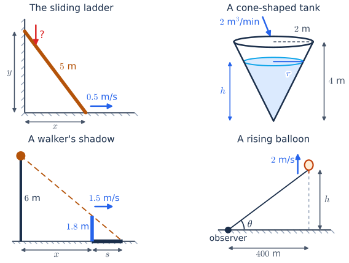
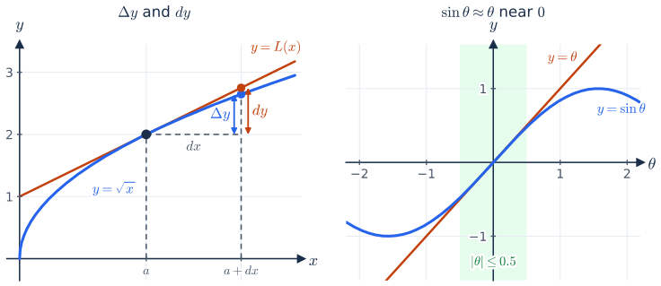
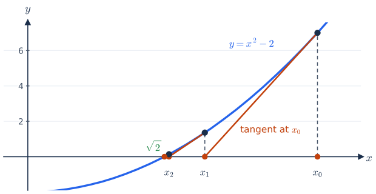
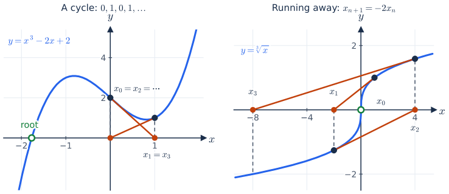
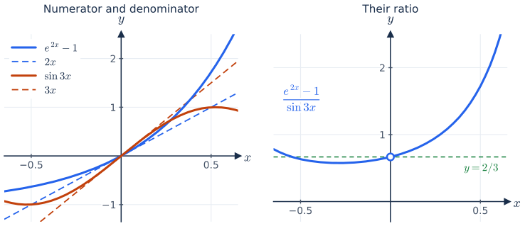

Put derivatives to work. Find how fast one quantity changes from how fast another does, approximate a function by its tangent line, estimate how errors in measurements spread into results, solve equations with Newton’s method, and evaluate the limits that the limit laws cannot, with L’Hôpital’s rule.
⏱ 255 minYou need: Modules 1 to 6 (the rules of differentiation, ex,lnx, implicit differentiation)
In this module you will
Solve related-rates problems with a diagram, an equation that holds at every instant and the chain rule
Approximate a function near a point by its linearisation, use differentials, and judge how good the approximation is
Estimate how a measurement error spreads into a computed result, as an absolute and as a relative error
Solve equations with Newton’s method, explain why its correct digits roughly double, and recognise when it fails
Evaluate limits of the forms 0/0,∞/∞,0⋅∞,∞−∞,1∞,00 and ∞0 with L’Hôpital’s rule and logarithms
Prove that logarithms grow more slowly than powers, and powers more slowly than exponentials
1
Related rates
When two quantities are linked by an equation and both change with time, their rates of change are linked too. Module 5’s chain rule, “rates multiply”, turns the equation between the quantities into an equation between their rates: if you know how fast one changes, you can work out how fast the other does. Such problems are called related rates problems.
Here is one. A ladder 5 metres long leans against a vertical wall, on level ground. Its foot starts 1 metre from the wall and is pulled away at a steady 0.5 m/s. After t seconds the foot is x=1+0.5t metres from the wall, and by Pythagoras’ theorem the top is y=25−x2 metres up the wall:
t
x
y=25−x2
0
1
4.899
1
1.5
4.770
2
2
4.583
3
2.5
4.330
4
3
4
5
3.5
3.571
6
4
3
7
4.5
2.179
The foot moves steadily, but the top does not. In the first second the top falls 4.899−4.770≈0.13 metres; in the eighth second, from t=7 until it reaches the ground at t=8, when x=5, it falls the remaining 2.179 metres. How fast is the top falling at the instant when the foot is 3 metres from the wall, at t=4? The drops in the seconds on either side of t=4 suggest a speed between 0.330 and 0.429 m/s. To find it exactly, you do not need the formula for y at all: you need the equation that links x and y at every instant.
Key idea
A strategy for related rates.
Draw a diagram. Give a letter to every quantity that changes with time, and write in the constants.
Write the rate you know and the rate you want as derivatives with respect to time t, with units: “dx/dt=0.5 m/s; find dy/dt when x=3 m”.
Find an equation that links the changing quantities and holds at every instant: from geometry (Pythagoras’ theorem, similar triangles, the formula for a volume) or from physics.
Differentiate both sides with respect to t. Each changing quantity is a function of t, so the chain rule applies to each: dtd(x2)=2xdtdx.
Only now substitute the values at the instant you care about, and solve for the rate you want. Check its sign and its units.

Figure 7.1
The four related-rates problems of this section, with the changing quantities named by letters: a ladder whose foot is pulled away from a wall (Example 7.1), a cone-shaped tank filling with water (Example 7.2), a person walking away from a street lamp (Example 7.3), and a balloon rising while an observer watches it (Example 7.4).
Example 7.1The sliding ladder✓ Checked
Find how fast the top of the ladder is falling when its foot is 3 metres from the wall.
Let x be the distance from the wall to the foot and y the height of the top, both in metres, at time t in seconds (Figure 7.1, top left). You know dx/dt=0.5 and want dy/dt when x=3. At every instant the ladder, the wall and the ground form a right triangle with hypotenuse 5, so
x2+y2=25.
Differentiate both sides with respect to t. By the chain rule the derivative of x2 is 2xdx/dt, and the derivative of the constant 25 is 0:
2xdtdx+2ydtdysodtdy=0,=−yxdtdx.
Now substitute the values at the instant. When x=3,y=25−9=4, and
dtdy=−43⋅0.5=−0.375 m/s.
The minus sign says that y is decreasing: the top slides down at 0.375 m/s, between the two estimates from the table.
The formula dy/dt=−(x/y)dx/dt also explains the table: as the top nears the ground, y approaches 0 and the speed of the top grows without bound. No real ladder can move like that, so the model, which assumes that the top stays on the wall, must break down before the top reaches the ground.
Watch out
Do not substitute the values of the instant before you differentiate. If you put x=3 into x2+y2=25 first, you get 9+y2=25, and differentiating that gives 2ydy/dt=0: the top does not move, which is wrong. The equation you differentiate must hold at every instant, not only at the one you care about.
Volumes, shadows and angles
Example 7.2Filling a cone-shaped tank✓ Checked
A tank has the shape of a cone with its vertex at the bottom. It is 4 m deep, and its top is a circle of radius 2 m. Water runs in at 2 m³ per minute. How fast is the water level rising when the water is 3 m deep?
Let h be the depth of the water and r the radius of its surface, in metres, at time t in minutes (Figure 7.1, top right). You know dV/dt=2 and want dh/dt when h=3. The water forms a cone of volume
V=31πr2h.
This links three changing quantities, so eliminate one first. A vertical cut through the axis shows two similar right triangles, the tank’s with legs 4 and 2 and the water’s with legs h and r. So r/h=2/4 at every instant, that is, r=h/2, and
V=31π(2h)2h=12πh3.
Differentiate with respect to t, by the chain rule:
dtdV=4πh2dtdh.
At h=3 this reads 2=49πdtdh, so
dtdh=9π8≈0.283 m/min.
The level rises about 28 cm per minute at that moment. It rises more slowly as the water deepens, because the same 2 m³ spreads over a wider surface.
Example 7.3A walker’s shadow✓ Checked
A street lamp is at the top of a 6 m pole. A person 1.8 m tall walks straight away from the pole at 1.5 m/s. How fast does the shadow lengthen, and how fast does the tip of the shadow move?
Let x be the person’s distance from the pole and s the length of the shadow, in metres (Figure 7.1, bottom left). The ray of light from the lamp to the tip of the shadow grazes the top of the person’s head, so the large triangle (pole, ground, ray) and the small one (person, shadow, ray) are similar. Height over base is the same in both:
x+s6=s1.8.
Multiply both sides by s(x+s):6s=1.8x+1.8s, so 4.2s=1.8x and s=73x. Differentiating,
dtds=73dtdx=73⋅1.5=149≈0.643 m/s.
The tip is x+s=710x from the pole, so it moves at 710⋅1.5=715≈2.14 m/s, faster than the person walks. Neither answer depends on where the person is: here the relation is linear, so the rates are constant.
Example 7.4Watching a balloon rise✓ Checked
A balloon rises straight up at a steady 2 m/s from a point on level ground 400 m from an observer. How fast is the angle of elevation of the observer’s line of sight increasing when the balloon is 300 m up?
Let h be the balloon’s height in metres and θ the angle of elevation in radians, at time t in seconds (Figure 7.1, bottom right). You know dh/dt=2 and want dθ/dt when h=300. In the right triangle formed by the observer, the launch point and the balloon,
tanθ=400h.
Differentiate both sides with respect to t. The derivative of tanθ is sec2θ (Module 5), so by the chain rule
sec2θdtdθ=4001dtdh.
When h=300, the line of sight has length 4002+3002=500, so cosθ=400/500=4/5 and sec2θ=25/16. Then
dtdθ=4001⋅2⋅2516=0.0032 rad/s,
about 0.18∘ per second (multiply by 180/π). Differentiating θ=arctan(h/400) instead (Module 6) gives the same answer.
Watch out
Two more slips are common. The first is a wrong sign: a quantity that decreases has a negative rate, so a tank that drains at 2 m³/min has dV/dt=−2. The second is degrees: the derivative of tanθ is sec2θ only when θ is in radians (Section 5.4), so work in radians and convert the answer at the end, as in Example 7.4.
Compute itRelated rates with SymPy
SymPy can carry out step 4 of the strategy. Make x and y functions of t with sp.Function, differentiate the equation of Example 7.1, and solve for dy/dt:
Python
import sympy as sp
t = sp.symbols('t')
x = sp.Function('x')(t) # the foot's distance from the wall at time t
y = sp.Function('y')(t) # the height of the top
link = x**2 + y**2 - 25# zero at every instant
dlink = sp.diff(link, t)
print(dlink)
dydt = sp.solve(dlink, sp.Derivative(y, t))[0]
print(dydt)
SymPy writes dx/dt as Derivative(x(t), t). The call sp.solve treats dlink as an expression equal to 0. Here it returns a list with one solution for dy/dt, and [0] takes that first entry. Now substitute the values at the instant, the rate first:
The first line is Example 7.1’s answer, −3/8=−0.375. The second is the pitfall after that example, in SymPy: substituting x=3 first also replaces the x(t) inside dx/dt, which becomes Derivative(3, t), the derivative of a constant, 0.
2
Linear approximation and differentials
Zoom in on the graph of a differentiable function near a point, and it looks more and more like a straight line: its tangent line. Near the point, then, the tangent line, which is easy to compute with, is a good stand-in for the function, which may not be. This section makes that precise and measures how good the stand-in is.
Definition 7.1Linearisation
Let f be differentiable at a. The linearisation of f at a is the function
L(x)=f(a)+f′(a)(x−a),
whose graph is the tangent line to y=f(x) at (a,f(a)). Using f(x)≈L(x) for x near a is the linear approximation, or tangent line approximation, of f at a.
L is the line through (a,f(a)) with slope f′(a), in the point-slope form of Section 1.4. It matches f in value and in slope at a:L(a)=f(a) and L′(a)=f′(a).

Figure 7.2
Left: the graph of y=x and its tangent line y=L(x) at a=4; near a they are hard to tell apart. From a to a+dx (here dx=3, exaggerated so that the gap shows), the curve rises by Δy and the tangent line by dy;dx and dy are the differentials defined later in this section. Right: y=sinθ and its tangent line y=θ at 0; in the green band, ∣θ∣≤0.5, they almost coincide.
Example 7.5Square roots near 4✓ Checked
Use the linearisation of f(x)=x at a=4 to estimate 4.1 and 3.9.
Here f(4)=2 and f′(x)=2x1, so f′(4)=41 and
L(x)=2+41(x−4).
So 4.1≈L(4.1)=2+41(0.1)=2.025 and 3.9≈L(3.9)=2−41(0.1)=1.975. A calculator gives 4.1≈2.024846 and 3.9≈1.974842: both estimates are within 0.0002 of the true values, and both are a little too big, because the graph of x bends away below its tangent line (Figure 7.2, left).
How good is the approximation further from 4, and closer to it? The table compares x with L(x):
x
x
L(x)
x−L(x)
3
1.73205
1.75
−0.0179492
3.9
1.97484
1.975
−0.000158234
3.99
1.99750
1.9975
−1.56446×10−6
4.01
2.00250
2.0025
−1.56055×10−6
4.1
2.02485
2.025
−0.000154327
5
2.23607
2.25
−0.0139320
Two things stand out. The error x−L(x) is always negative: the tangent line lies above the graph. And each time x moves ten times closer to 4, the error shrinks about a hundred times: it is 0.014 or 0.018 at distance 1, 0.00015 or 0.00016 at distance 0.1, and 0.0000016 at distance 0.01. The error behaves like a constant times (x−4)2.
How good is it?
Theorem 7.1The tangent line is the best linear approximation
Let f be differentiable at a, with linearisation L, and let E(x)=f(x)−L(x) be the error of the linear approximation. Then
x→alimx−aE(x)=0.
That is, the error is small even compared with the distance x−a. Moreover, L is the only linear function with this property: if ℓ(x)=c+m(x−a) and (f(x)−ℓ(x))/(x−a)→0 as x→a, then c=f(a) and m=f′(a).
As x→a the difference quotient approaches f′(a), by the definition of the derivative (Module 4), so the whole expression approaches 0.
Now suppose ℓ(x)=c+m(x−a) has the property. Then f(x)−ℓ(x)=x−af(x)−ℓ(x)(x−a) approaches 0⋅0=0. But f is continuous at a, because it is differentiable there (Module 4), so f(x)−ℓ(x) also approaches f(a)−c. Hence c=f(a), and then
x−af(x)−ℓ(x)=x−af(x)−f(a)−m→f′(a)−m.
This limit is 0, so m=f′(a).
∎
If you read the Going deeper box at the end of Section 4.4, you have met this theorem before, as “differentiable means locally linear”; here it is put to work. Differentiability is needed. At the corner of ∣x∣ at 0, no line c+mx will do: c must be ∣0∣=0, and then (∣x∣−mx)/x approaches 1−m from the right and −1−m from the left, which cannot both be 0.
Theorem 7.1 says that the error is small compared with x−a, but not how small. The table suggests a constant times (x−a)2, and that is the usual case: if f′′ is continuous near a, then, for x near a,
f(x)−L(x)≈2f′′(a)(x−a)2,
in the sense that (f(x)−L(x))/(x−a)2 approaches f′′(a)/2 as x→a. And if ∣f′′∣≤M between a and x, then ∣f(x)−L(x)∣≤2M(x−a)2. Both follow from Taylor’s theorem, which Module 15 proves. For x at 4, f′′(x)=−41x−3/2, so f′′(4)=−321, and the error at x=4.1 should be about −641(0.1)2≈−0.000156; the table gives −0.000154.
Watch out
A linear approximation is good only near a. Far away the tangent line and the curve part company: L(9)=2+45=3.25, while 9=3. Before trusting f(x)≈L(x), ask how far x is from a, and how sharply the graph bends in between.
Example 7.6The small-angle approximation✓ Checked
Find the linearisation of sinθ at 0, and the angles for which it is accurate to within 1%.
sin0=0, and the derivative of sinθ is cosθ (Module 5), with cos0=1. So L(θ)=0+1⋅(θ−0)=θ:
sinθ≈θfor θ near 0,
with θ in radians. The table gives the relative error (θ−sinθ)/sinθ, the error as a fraction of the true value (Section 7.3):
θ
sinθ
sinθθ−sinθ
0.01
0.01000
1.667×10−5
0.05
0.04998
0.0004168
0.1
0.09983
0.001669
0.2
0.1987
0.006698
0.5
0.4794
0.04291
1
0.8415
0.1884
The relative error stays below 0.01, that is 1%, for ∣θ∣ up to about 0.24 radians, about 14∘ (a calculator shows that it passes 0.01 between θ=0.24 and θ=0.25); at θ=0.1 it is about 0.17%. Like the error of the linearisation of x above, it shrinks about a hundredfold when θ shrinks tenfold. (The relative error is an even function of θ, so negative angles behave the same.)
Physics and engineering use the small-angle approximation constantly. For a pendulum, replacing sinθ by θ turns its equation of motion into one that Module 13 solves exactly, which is why the usual formula for a pendulum’s period holds only for small swings. In degrees the approximation reads sin(θ∘)≈πθ/180, with an awkward factor: one more reason calculus works in radians.
Differentials
Leibniz’s notation dy/dx looks like a fraction. Differentials give its two halves a meaning of their own.
Definition 7.2Differentials
Let y=f(x), with f differentiable. The differentialdx is an independent variable: it can be any real number. The differentialdy is then defined by
dy=f′(x)dx.
So dy depends on two numbers, x and dx.
For dx=0, dividing by dx gives dy/dx=f′(x): the derivative is a quotient of differentials after all. Compare dy with the actual change of y when x changes by Δx=dx,
Δy=f(x+dx)−f(x).
In Figure 7.2 (left), Δy is the rise of the curve and dy the rise of the tangent line between a and a+dx:dy=L(a+dx)−L(a). By Theorem 7.1, Δy−dy is small compared with dx when dx is small, so Δy≈dy.
Example 7.7dy and Δy for a cube✓ Checked
Let y=x3. Find dy and Δy when x=2 and dx=0.05.
dy=3x2dx=3⋅4⋅0.05=0.6. The actual change is
Δy=2.053−23=8.615125−8=0.615125.
The differential is off by 0.015125, about 2.5% of Δy. Expanding shows where the difference comes from: (2+dx)3−8=12dx+6(dx)2+(dx)3, and dy=12dx keeps only the first term.
Watch out
dy is not Δy. The differential is the change along the tangent line, Δy the change along the curve. They are close only when dx is small, and dy is the one that is easy to compute, which is why it is useful.
3
Propagating measurement errors
Every measurement has an error, and whatever you compute from a measured quantity inherits an error too. Differentials estimate it: if x is measured with an error Δx, then y=f(x) is computed with an error
Δy≈dy=f′(x)Δx.
Definition 7.3Absolute and relative error
Suppose a quantity whose true value is x is measured, or computed, as x~ (read “x tilde”). The error of x~ is Δx=x−x~: the true value minus the approximation, the same order as in the error f(x)−L(x) of Section 7.2. The absolute error is ∣Δx∣. For x=0, the relative error is ∣Δx∣/∣x∣; written as a percentage, it is the percentage error.
In practice you know neither the true value nor the error, only the measured value and a bound on the error, such as “10.0 cm, to within 0.1 cm”; you then divide the bound by the measured value. When the error is small, the difference does not matter.
Example 7.8The volume of a ball✓ Checked
Suppose the radius of a ball is measured as 10.0 cm, with an error of at most 0.1 cm.
(a) Estimate the largest possible error in the volume computed from it, as an absolute and as a relative error.
(b) How accurately must the radius be measured to know the volume to within 1%?
(a)V=34πr3, so dV=4πr2dr. With r=10 and ∣dr∣≤0.1,
∣dV∣≤4π⋅102⋅0.1=40π≈126 cm3.
The computed volume is V=34000π≈4189 cm³, so the relative error is at most about
4000π/340π=1003=3%.
The exact changes confirm the estimate: V(10.1)−V(10)≈126.9 cm³ and V(9.9)−V(10)≈−124.4 cm³.
(b) Divide dV=4πr2dr by V=34πr3:
VdV=3rdr.
The relative error of the volume is three times that of the radius. For a volume within 1%, the radius must be within 31%: for r=10 cm, within 10×3001≈0.033 cm, a third of a millimetre.
The same computation works for any power. If y=cxk, with constants c=0 and k, then dy=ckxk−1dx, and dividing by y,
ydy=kxdx.
So the relative error of a kth power is about ∣k∣ times the relative error of x. A square doubles it, a cube triples it and a square root halves it, whatever the constant c.
Watch out
The estimate Δy≈dy is a linear approximation, so it is good only for small errors. If the radius is measured 50% too large, the formula says that the volume is out by 3×50%=150%, but 1.53=3.375, so the true error is 237.5%. For large errors, compute f(x+Δx)−f(x) itself.
Good to know
Computers make relative errors too: a floating-point number carries a relative error of up to about 10−16. The rule above says how such an error grows when you compute f(x): it is multiplied by ∣xf′(x)/f(x)∣, the condition number of f at x. For xk the condition number is ∣k∣; for x−1 it is ∣x/(x−1)∣, huge near x=1, which is the cancellation error of Module 2. Exercise 7.12 explores condition numbers.
4
Newton’s method
Most equations cannot be solved exactly by algebra: no rearrangement of cosx=x leaves x alone on one side, and even where a formula exists, as for cubic equations such as x3−2x−5=0, it is usually easier to compute the root numerically. Module 3’s bisection method halves an interval that contains a root, gaining one binary digit, about 0.3 decimal digits, per step. Newton’s method (also called the Newton–Raphson method) uses the derivative. Near a root it is far faster; but, unlike bisection, it comes with no guarantee, and the end of this section shows how it can fail.
The idea. Near a root r of f, replace the graph of f by its tangent line at a point x0 that you have, and solve the easy equation instead: where does the tangent line cross the x-axis? Call that point x1. It is usually much closer to r (Figure 7.3). Then repeat from x1.
The tangent line at (xn,f(xn)), where xn is read “x sub n”, is y=f(xn)+f′(xn)(x−xn), the linearisation of f at xn. It meets the x-axis where y=0. If f′(xn)=0, solving 0=f(xn)+f′(xn)(x−xn) for x gives x=xn−f(xn)/f′(xn).
Definition 7.4Newton’s method
To solve f(x)=0, where f is differentiable, choose a starting value x0 and compute
xn+1=xn−f′(xn)f(xn),n=0,1,2,…,
as long as f′(xn)=0. The numbers x0,x1,x2,… are the iterates. Stop when they no longer change to the accuracy you need.

Figure 7.3
Newton’s method for f(x)=x2−2, starting from x0=3. The tangent line at (x0,f(x0)) meets the x-axis at x1≈1.83; the tangent line at (x1,f(x1)) meets it at x2≈1.46. The next iterate, x3≈1.415, is too close to the root 2 to tell apart at this scale.
To say how good an iterate is, count its correct decimals. An approximation x~ of a number r is correct to d decimal places if its absolute error is less than half a unit in the dth decimal place: ∣r−x~∣<0.5×10−d. Correct to 0 decimal places means within 0.5 of r; further away, x~ has no correct decimals at all.
Example 7.9Newton’s method for 2✓ Checked
Use Newton’s method to compute 2, starting from x0=1.
2 is the positive root of f(x)=x2−2, with f′(x)=2x. The step simplifies:
Two more steps, done exactly by computer, give the table; compare 2=1.414213562373095…:
xn
xn in decimals
xn−2
1
1.000000000000000
−0.414213562373095
23
1.500000000000000
0.085786437626905
1217
1.416666666666667
0.002453104293572
408577
1.414215686274510
0.000002123901415
470832665857
1.414213562374690
0.000000000001595
627013566048886731088897
1.414213562373095
0.000000000000000
The iterates x0,…,x5 are correct to 0, 0, 2, 5, 11 and 23 decimal places: from x2 on, each step roughly doubles the number of correct decimals. (The table shows 15 decimals, so the last row looks exact; its error is about 9×10−25.)
Example 7.10Solving cosx=x✓ Checked
Show that cosx=x has exactly one solution in [0,1], and find it with Newton’s method from x0=1.
Let f(x)=cosx−x. Then f(0)=1>0 and f(1)=cos1−1<0, so by the Intermediate Value Theorem (Module 3) f has a root in (0,1). There is only one: on [0,1],cosx decreases (on the unit circle, the x-coordinate of the point at angle x decreases as x goes from 0 to π) and −x decreases too, so f is strictly decreasing and takes the value 0 only once.
After four steps f(x4) is exactly 0 in floating point, and the fifth step changes nothing: the iterates have reached the limit of double precision, about 16 significant digits. Bisection would need more than 50 halvings of [0,1] to get as close.
Square roots work the same way. This function computes a with the step of Example 7.9, xn+1=21(xn+a/xn). It starts above a; Theorem 7.2 below shows that the iterates then decrease towards a, so the function stops as soon as they stop decreasing:
Python
defmy_sqrt(a):
x = max(a, 1.0) # a starting value above sqrt(a)
steps = 0whileTrue:
new = (x + a/x)/2
steps += 1if new >= x: # no longer decreasing: as good as it getsreturn x, steps
x = new
for a in [2.0, 3.0, 1e6]:
print(a, my_sqrt(a), math.sqrt(a))
For 3 and 106 the answers agree with math.sqrt to the last digit. For 2 they differ in the last binary digit, by 2−52≈2.2×10−16:math.sqrt returns the floating-point number closest to 2, this function returns the next one down, and getting that last digit right takes more care than this short function does. The 16 steps for 106 show the cost of a poor start: from x0=106, each early step only halves x, because a/x is tiny next to x; the digits start to double only near the root.
Why the digits double
For square roots, the doubling can be proved in a few lines. For iterates it is convenient to subtract the other way round from an error: write en=xn−r, where r is the root. This is the error of xn (Definition 7.3) with its sign reversed: it is positive when xn is too big, and ∣en∣ is the absolute error.
Theorem 7.2Newton’s method for square roots
Let a>0 and x0>0, and let xn+1=21(xn+a/xn) for n=0,1,2,…. Then
xn+1−a=2xn(xn−a)2.
Consequently xn≥a for every n≥1, the iterates decrease from x1 on, and they approach a.
Proof
All the iterates are positive: x0>0, and each step averages two positive numbers. Put the step over a common denominator and subtract a:
The right side is never negative, so xn+1≥a for every n≥0: all the iterates from x1 on are at least a. For such an xn,a/xn≤a≤xn, so xn+1, the average of a/xn and xn, is at most xn: the iterates decrease. Finally, here the root is a, so en=xn−a. For n≥1,0≤en<xn, so
en+1=en⋅2xnen≤2en,
and en≤e1/2n−1, which approaches 0.
∎
The identity explains the table of Example 7.9. Near the root 2xn≈22≈2.8, so en+1≈en2/2.8: an error of 10−5 becomes one of about 4×10−11. Squaring the error doubles the number of zeros after the decimal point, so the number of correct digits doubles.
The same happens for any function with a nonzero derivative at its root.
Let f(r)=0. Suppose that f′ and f′′ are continuous on an open interval containing r, and that f′(r)=0. Then there is a δ>0 such that, for every starting value x0 with ∣x0−r∣<δ, Newton’s method never meets f′(xn)=0, the iterates approach r, and en=xn−r satisfies
n→∞limen2en+1=2f′(r)f′′(r)
(if no iterate lands exactly on r). Each en+1 is roughly a fixed multiple of en2, so each absolute error is roughly a fixed multiple of the square of the one before: Newton’s method converges quadratically.
The idea of the proof. Newton’s step solves Ln(x)=0, where Ln is the linearisation of f at xn. The root solves f(r)=0 instead, and by Section 7.2 the error of the linearisation at r is f(r)−Ln(r)≈21f′′(xn)(r−xn)2, so Ln(r)≈−21f′′(xn)en2. But Ln is a line of slope f′(xn) that is 0 at xn+1, so Ln(r)=f′(xn)(r−xn+1)=−f′(xn)en+1. Equating the two expressions for Ln(r) gives
en+1≈2f′(xn)f′′(xn)en2.
Taylor’s theorem (Module 15) controls the error of the first ≈ and turns this idea into a proof. For f(x)=x2−a the constant is 2⋅2a2=2a1, as in Theorem 7.2; for 2 it is 1/(22)≈0.354, and the iterates of Example 7.9 indeed give e5/e42≈0.354.
How computers compute square roots
Programs compute square roots constantly, in graphics, physics simulations and machine learning, and a few Newton steps from a good starting value are one standard way to do it. Two ideas make it fast.
A good start. A floating-point number is stored as a=m×2e, with 1≤m<2 and a whole-number exponent e. Moving one factor 2 into m if e is odd makes e even and 1≤m<4, and then a=m×2e/2. So only square roots of numbers between 1 and 4 are ever needed, and a small table, or a simple formula, can give a starting value with a small relative error, say at most 1%.
Few steps. Write xn=a(1+εn), so that εn=en/a (ε is the Greek “epsilon”) is positive when xn is too big, and ∣εn∣ is the relative error of xn. Substituting this into the identity of Theorem 7.2 and dividing by a gives
εn+1=2(1+εn)εn2.
From ∣ε0∣≤0.01:ε1≤0.0001/(2×0.99)≈5.1×10−5, and from then on εn≥0, so εn+1≤εn2/2, which gives ε2≤1.3×10−9 and ε3≤8.2×10−19. That is far below the precision of double-precision numbers, a relative error of about 1.1×10−16: three steps are enough.
Division is slower than multiplication on most processors, so where speed matters a division-free variant is popular: Newton’s method applied to 1/y2−a=0, whose root is 1/a, needs only multiplications (Exercise 7.10). Graphics programs, for example, need 1/a to scale vectors to length 1.
When Newton’s method fails
Theorem 7.3 promises success only when x0 is close enough to a root at which f′ is not 0 (with f′′ continuous near it). It does not say how close is close enough, and for other starting values it promises nothing. Outside those conditions Newton’s method can fail in several ways (Figure 7.4):
A horizontal tangent. If f′(xn)=0, the tangent line is horizontal and never meets the x-axis: there is no next iterate. For f(x)=x2−2 this happens at x0=0. If f′(xn) is merely small, the next iterate lands far away: from x0=0.1,x1=10.05.
A cycle. For f(x)=x3−2x+2 from x0=0:f(0)=2 and f′(0)=−2, so x1=0−2/(−2)=1; then f(1)=1 and f′(1)=1, so x2=1−1=0. The iterates alternate between 0 and 1 for ever, while the only real root is near −1.769.
Running away. The iterates move further and further from the root (Example 7.11).
Leaving the domain. For f(x)=lnx from x0=3,x1=3−3ln3≈−0.296, where ln is not defined.
Slow convergence. At a root where f′(r)=0 as well, such as the double root 1 of (x−1)2, the step is xn+1=xn−21(xn−1): the error only halves at each step, no better than bisection.
Example 7.11A root that Newton’s method cannot find✓ Checked
Show that Newton’s method for f(x)=3x moves away from the root 0, from every starting value x0=0.
For x=0,f′(x)=33x21:3x is the inverse of x3, and the derivative of an inverse function (Module 6) is 1/(3u2) at u=3x. So, writing u=3xn, so that xn=u3,
xn+1=xn−1/(3u2)u=xn−3u3=xn−3xn=−2xn.
Each step doubles the distance from the root and switches sides: from x0=1 the iterates are −2,4,−8,16,… (Figure 7.4, right). Theorem 7.3 does not apply, because f′(0) does not exist: the graph has a vertical tangent at its root. At any other point (u3,u) of the graph, the tangent has slope 1/(3u2), a third of the slope u/u3=1/u2 of the line from that point to the root. So each tangent meets the axis three times as far from xn as the root is: at −2xn, beyond the root.

Figure 7.4
Two failures of Newton’s method. Left: for f(x)=x3−2x+2 from x0=0, the tangent at x0 leads to x1=1, and the tangent at x1 leads back to 0; the only root, near −1.769 (green), is never reached. Right: for f(x)=3x from x0=1, each tangent overshoots the root 0 (green) and lands twice as far away on the other side.
Tip
In practice: start close to the root (a graph, a table of values or a few steps of bisection tell you where it is), watch ∣f(xn)∣ and the step ∣xn+1−xn∣ shrink, and give up after a fixed number of steps if they do not. Good equation solvers combine the safety of bisection with the speed of Newton’s method.
Try it
Choose a function and a starting point x0, then press Step: each step draws the tangent line at the current point down to the x-axis, and the table lists xn, its number of correct decimal places, and f(xn). With x2−2 from x0=1, watch the correct decimals go 0, 0, 2, 5, 11, 15; the last is the limit of double precision. Then try the failures: x0=0 for x2−2;x3−2x+2 from x0=0;3x from any x0=0; and type ln(x) with x0=3. Finally try x3−2x−5 from x0=0.8, near a point where f′(x)=0, and see how far the first step goes.
5
L’Hôpital’s rule
Module 2 evaluated limits of the form 0/0 by algebra: factor and cancel, rationalise, or squeeze. Many such limits resist algebra. What is
x→0limsin3xe2x−1?
The numerator and the denominator both approach 0, and there is nothing to cancel. The numbers suggest 2/3:
x
e2x−1
sin3x
sin3xe2x−1
0.1
0.221403
0.295520
0.749197
0.01
0.0202013
0.0299955
0.673479
0.001
0.00200200
0.00300000
0.667335
−0.001
−0.00199800
−0.00300000
0.666001
−0.01
−0.0198013
−0.0299955
0.660143
−0.1
−0.181269
−0.295520
0.613390
Figure 7.5 shows why. Near 0 each function is close to its tangent line there: e2x−1≈2x, since its derivative at 0 is 2, and sin3x≈3x, since its derivative at 0 is 3. So the ratio is close to 2x/3x=2/3: the ratio of the slopes.

Figure 7.5
Left: e2x−1 and sin3x both pass through the origin, close to their tangent lines y=2x and y=3x (dashed). Right: their ratio, which is not defined at 0 (the hollow dot), approaches 2/3, the ratio of the slopes of the tangent lines.
Definition 7.5Indeterminate forms 0/0 and ∞/∞
If f(x)→0 and g(x)→0 as x→a, the limit of f(x)/g(x) has the indeterminate form0/0. If f(x)→±∞ and g(x)→±∞, it has the indeterminate form ∞/∞. Here a may be a number, ∞ or −∞, and the limits may be one-sided.
“Indeterminate” means that the form alone does not decide the limit. As x→0,x/x→1,x2/x→0 and x/x3→∞, all of the form 0/0: you must look more closely at f and g.
The rule
Theorem 7.4L’Hôpital’s rule, simple form
Let f and g be defined on an open interval containing a, with f(a)=g(a)=0. If f′(a) and g′(a) exist and g′(a)=0, then
x→alimg(x)f(x)=g′(a)f′(a).
Proof
For x=a in the interval, subtract f(a)=0 and g(a)=0, then divide the numerator and the denominator by x−a=0:
As x→a, the numerator approaches f′(a) and the denominator approaches g′(a), by the definition of the derivative (Module 4). Since g′(a)=0, the quotient law for limits (Module 2) gives the limit f′(a)/g′(a).
One detail remains: f(x)/g(x) must be defined for x near a, that is, g(x)=0. The difference quotient of g approaches g′(a)=0, so for x close enough to a it lies within ∣g′(a)∣/2 of g′(a) and is not 0; then g(x)=(x−a)⋅x−ag(x)−g(a)=0 for those x=a.
∎
Example 7.12The ratio of the slopes✓ Checked
Find x→0limsin3xe2x−1.
Let f(x)=e2x−1 and g(x)=sin3x. Both are differentiable everywhere, with f(0)=e0−1=0 and g(0)=sin0=0. By the chain rule f′(x)=2e2x and g′(x)=3cos3x, so f′(0)=2 and g′(0)=3=0. By Theorem 7.4,
x→0limsin3xe2x−1=g′(0)f′(0)=32,
as the table and Figure 7.5 suggested.
The simple form needs f(a)=g(a)=0 and g′(a)=0, and often one of these fails: f and g may not be defined at a,a may be ∞, or g′(a) may be 0 as well. The general rule compares the limit of f/g with the limit of f′/g′ instead of with values at a.
Theorem 7.5L’Hôpital’s rule
Let f and g be differentiable on an open interval I containing a, except possibly at a itself, with g′(x)=0 for every x=a in I. Suppose that the limit of f(x)/g(x) as x→a has one of the indeterminate forms 0/0 or ∞/∞. If
x→alimg′(x)f′(x)=L,
where L is a real number, ∞ or −∞, then
x→alimg(x)f(x)=L.
The same holds for one-sided limits, with I an open interval that has a as an endpoint, and for x→∞ or x→−∞, with I an interval (b,∞) or (−∞,b).
Module 8 proves this general form, in a Going deeper box, with Cauchy’s mean value theorem; the proof needs tools that you do not have yet. Each hypothesis is needed. The form must be indeterminate (the first pitfall below); g′ must not be 0 near a, so that f′/g′ is defined there; and the limit of f′/g′ must exist: if it does not, the rule says nothing (the third pitfall).
Example 7.13Using the rule twice✓ Checked
Find x→0limx2ex−1−x.
At x=0 the numerator is 1−1−0=0 and the denominator is 0: the form is 0/0. The simple form does not apply, because the derivative of x2,2x, is 0 at 0. Theorem 7.5 applies (near 0, 2x=0 except at 0) and says that the limit equals
x→0lim2xex−1,
if this limit exists. It has the form 0/0 again, and now the simple form applies: f1(x)=ex−1 and g1(x)=2x have f1(0)=g1(0)=0,f1′(0)=e0=1 and g1′(0)=2=0, so this limit is 21. Therefore
x→0limx2ex−1−x=21.
The answer says something about ex: near 0, ex−1−x≈21x2, that is, ex≈1+x+21x2, a better approximation than the linearisation 1+x. Module 15 takes this idea much further.
Example 7.14A limit at infinity✓ Checked
In machine learning, the softplus function s(x)=ln(1+ex) is a smooth version of the function ReLU(x)=max(0,x) of Section 1.3. Show that s(x)/x→1 as x→∞.
As x→∞,ln(1+ex)→∞ and x→∞: the form is ∞/∞. The derivatives are 1+exex (chain rule) and 1, which is never 0, and dividing the numerator and the denominator by ex,
x→∞lim1ex/(1+ex)=x→∞lime−x+11=0+11=1.
By Theorem 7.5, s(x)/x→1: for large x, softplus behaves like ReLU, which equals x there.
Using the rule correctly
Watch out
Check the form first. L’Hôpital’s rule applies only to 0/0 and ∞/∞. Take x→0limx+x21−cosx. It has the form 0/0, and the rule gives x→0lim1+2xsinx=10=0, the right answer. Applying the rule again, to 1+2xsinx, which is not indeterminate, gives 2cosx→21: wrong. At each stage, substitute first, and differentiate only if the result is 0/0 or ∞/∞.
Watch out
Differentiate the top and the bottom separately. The rule uses g′(x)f′(x), the quotient of two derivatives, not (gf)′(x), the derivative of the quotient. Reaching for the quotient rule of Module 5 here is a common slip, and it gives a different expression with, in general, a different limit.
Watch out
The converse is false. If f′/g′ has no limit, the rule says nothing about f/g. As x→∞,xx+sinx=1+xsinx→1 (by the squeeze theorem, since ∣sinx/x∣≤1/x), but the quotient of the derivatives, 11+cosx, keeps swinging between 0 and 2 and has no limit.
Good to know
L’Hôpital’s rule gives θ→0limθsinθ=1cos0=1 in one line, but as a proof that would be circular: the derivative of sin, which the rule uses, was found from this very limit (Modules 2 and 5). The rule is a tool for limits whose ingredients you can already differentiate.
6
Other indeterminate forms
Products, differences and powers have indeterminate forms too. As x→∞,1/x→0 and x→∞, yet
x1⋅x→1,x21⋅x→0,x1⋅x2→∞.
A product of the form 0⋅∞ can approach anything. The same is true of differences of the form ∞−∞ and of powers of the forms 1∞,00 and ∞0; these are indeterminate forms too. The strategy for each is to rewrite the expression as a quotient of the form 0/0 or ∞/∞, and use L’Hôpital’s rule.
Products and differences
A productfg of the form 0⋅∞ becomes a quotient when you divide by the reciprocal of one factor: fg=1/gf, of the form 0/0, or fg=1/fg, of the form ∞/∞. Choose the one with the simpler derivatives.
Example 7.15xlnx near 0✓ Checked
Find x→0+limxlnx.
As x→0+,x→0 and lnx→−∞: the form is 0⋅∞. Write the product as 1/xlnx, of the form ∞/∞ (the top approaches −∞, the bottom ∞). The quotient of the derivatives is
−1/x21/x=−x→0,
and −1/x2=0, so by Theorem 7.5
x→0+limxlnx=0.
The factor x wins against lnx. The other choice, 1/lnxx, leads to −1/(x(lnx)2)1=−x(lnx)2, which is worse than where you started.
A difference of the form ∞−∞ usually becomes a quotient when you put it over a common denominator; sometimes factoring or rationalising does it.
Example 7.16A difference of the form ∞−∞✓ Checked
Find x→1lim(x−1x−lnx1).
As x→1+ both terms approach ∞, and as x→1− both approach −∞. Over the common denominator (x−1)lnx,
x−1x−lnx1=(x−1)lnxxlnx−(x−1),
of the form 0/0 at x=1. Differentiate the top and the bottom, each with the product rule:
lnx+(x−1)/xlnx+1−1=lnx+1−1/xlnx.
Theorem 7.5 needs the derivative of the bottom to be non-zero near 1, except at 1, and it is: for x>1,lnx and 1−1/x are both positive, and for 0<x<1 both are negative. The new quotient is 0/0 again, and now the simple form applies with f(x)=lnx and g(x)=lnx+1−1/x:f′(1)=1 and, since g′(x)=1/x+1/x2,g′(1)=2. So, by Theorems 7.4 and 7.5,
x→1lim(x−1x−lnx1)=21.
Powers
The forms 1∞,00 and ∞0 arise in limits of f(x)g(x), with f(x)>0. Take logarithms: if y=f(x)g(x), then
lny=g(x)lnf(x),
which has the form 0⋅∞ in all three cases. Find the limit L of lny; then, because ex is continuous (Module 3), y=elny approaches eL.
Example 7.17The limit that defines e✓ Checked
Show that x→∞lim(1+xa)x=ea for every real number a, and deduce that (1+n1)n→e as n→∞.
For a=0 every value is 1x=1=e0. For a=0 the form is 1∞. Let y=(1+a/x)x, for x>∣a∣, so that 1+a/x>0. Then
lny=xln(1+xa)=1/xln(1+a/x),
of the form 0/0. The top and the bottom are differentiable for x>∣a∣, and the derivative of the bottom, −1/x2, is never 0. Differentiate the top (chain rule) and the bottom:
−x211+a/x1⋅(−x2a)=1+a/xa→a.
So lny→a by Theorem 7.5, and y→ea. With a=1,(1+1/x)x→e as x→∞, and therefore also as x runs through the whole numbers n=1,2,3,….
This is the compound interest of Module 6, whose Theorem 6.6 proved the same limit for whole numbers n, from the derivative of ln at 1; L’Hôpital’s rule gives a second proof, for every real x. Interest at a rate a a year, added n times a year, multiplies money by (1+a/n)n in a year, and as n grows that approaches ea, the factor for interest added continuously.
Example 7.1800 and ∞0✓ Checked
Find x→0+limxx and x→∞limx1/x.
xx, of the form 00.ln(xx)=xlnx→0 as x→0+, by Example 7.15. So xx→e0=1.
x1/x, of the form ∞0.ln(x1/x)=xlnx, of the form ∞/∞. The derivative of the bottom is 1, never 0, and the quotient of the derivatives is 11/x→0. So, by Theorem 7.5, ln(x1/x)→0, and x1/x→e0=1; for example, 10001/1000≈1.0069.
Watch out
Indeterminate means undecided, not “equal to 1”. By Example 7.17, forms 1∞ can approach e, or any positive number ea. Forms 00 need not approach 1 either: for 0<x<1,x1/lnx=elnx/lnx=e, so as x→0+, where it has the form 00, it approaches e. And remember the last step: when lny→L, the answer is eL, not L.
Compute itLimits with SymPy, and indeterminate forms in floating point
SymPy’s limit evaluates the limits of this section and the last. Its fourth argument is the direction: '+-' for a two-sided limit, '+' or '-' for a one-sided one. Leave it out and SymPy takes the limit from the right, which is not what x→0 means. The answers agree with the examples:
Floating-point arithmetic has its own answers to indeterminate forms, mostly fixed by the IEEE 754 standard for floating-point arithmetic. The forms 0⋅∞,∞−∞ and ∞/∞ give nan, “not a number”, and in Python 0/0 raises an error:
The three powers come out as 1.0. That is a convention, convenient in programs, not a limit: (1+1/n)n has the form 1∞ and approaches e. Floating point can even get that limit badly wrong:
Python
for n in [10, 10**6, 10**12, 10**15, 10**16]:
print(n, (1 + 1/n)**n)
Up to n=106 the values approach e=2.71828…; then they go wrong. For n=1016,1+10−16 rounds to exactly 1, and 1n=1. For n=1012 and 1015,1+1/n is stored with a tiny relative error, and raising it to the power n multiplies that error by about n: the condition number of un is n (the note in Section 7.3). The cure is to avoid forming 1+1/n at all: math.log1p(u) computes ln(1+u) accurately for small u, and (1+1/n)n=enln(1+1/n).
Python
n = 10**15print(math.exp(n*math.log1p(1/n)), math.e)
Output
2.7182818284590438 2.718281828459045
7
Comparing growth rates
Module 3 ranked functions by how fast they grow as x→∞ (Theorem 3.11): logarithms grow more slowly than powers, and powers more slowly than exponentials. That ranking is why an algorithm whose running time grows like n2 beats one that grows like 2n on large inputs. Module 3 proved it in a Going deeper box with the tools it had; L’Hôpital’s rule proves it in a few lines.
Theorem 7.6Logarithms grow more slowly than powers
For every p>0,
x→∞limxplnx=0.
Proof
As x→∞,lnx→∞ and xp→∞, and the derivative of xp,pxp−1 (Module 6), is not 0 for x>0. The quotient of the derivatives is
pxp−11/x=pxp1→0,
so by L’Hôpital’s rule (Theorem 7.5) lnx/xp→0.
∎
The theorem holds for every p>0, however small, but for small p the limit takes its time. The table shows lnx/x0.1: it climbs to a largest value of 10/e≈3.68, at x=e10≈22026 (Module 8 shows how to find such maxima), and only then falls, slowly.
x
x0.1lnx
10
1.829
104
3.667
1010
2.303
1020
0.4605
1050
0.001151
10100
2.303×10−8
Theorem 7.7Powers grow more slowly than exponentials
For every real number p and every a>1,
x→∞limaxxp=0.
Proof
First let a=e and let p=n be a whole number, n≥1. The quotient xn/ex has the form ∞/∞, and the derivative of ex is never 0. L’Hôpital’s rule turns it into nxn−1/ex, which has the form ∞/∞ again if n≥2. After n applications,
exxn,exnxn−1,exn(n−1)xn−2,…,exn!,
where n!=n(n−1)⋯2⋅1 (Module 3). The last quotient approaches 0. By Theorem 7.5 each quotient in the list has the same limit as the next one, so, working backwards, all of them approach 0. (For n=0,1/ex→0 directly.)
Next, any real p: choose a whole number n≥p. For x≥1,xp≤xn, so 0<xp/ex≤xn/ex, and the squeeze theorem (Module 2) gives xp/ex→0.
Finally, any a>1: then lna>0 and ax=exlna. Put u=xlna, which approaches ∞ with x; then
axxp=eu(u/lna)p=(lna)p1⋅euup→0.
∎
Again the limit can take its time. With p=10:
x
exx10
10
454000
20
21100
30
55.3
40
0.0445
50
1.88×10−5
100
3.72×10−24
At x=10,x10 is about 450,000 times as large as ex; at x=100 it is smaller by a factor of about 3×1023.
Key idea
As x→∞, for every p>0,q>0 and a>1:lnx≪xp≪ax and (lnx)q≪xp, where f≪g (Module 3’s notation, read “f is much smaller than g”) means f(x)/g(x)→0. The last follows from the first: (lnx)q/xp=(lnx/xp/q)q→0. Any power of a logarithm loses to any positive power of x, and any power of x loses to any exponential with base greater than 1, whatever the constants.
Watch out
A growth rate is a statement about large x only. x10 is larger than ex at x=10 and at x=30, and lnx is larger than x0.1 for every x from about 3 to about 3×1015. The same caution applies to algorithms: one that takes n2 steps beats one that takes 2n steps for large n, but for n=3 the second takes 8 steps and the first 9.
8
What you learned
Related rates: draw a diagram, find an equation that links the changing quantities at every instant, differentiate it with respect to time (each quantity is a function of t, so the chain rule applies), and only then substitute the values at the instant.
The linearisationL(x)=f(a)+f′(a)(x−a) is the tangent line at a, and f(x)≈L(x) near a. Its error is small compared with x−a (Theorem 7.1), and usually close to 21f′′(a)(x−a)2. Examples: 4.1≈2.025,sinθ≈θ.
Differentials: dy=f′(x)dx is the change along the tangent line, Δy the change along the curve, and Δy≈dy when dx is small.
Errors propagate as Δy≈f′(x)Δx. The relative error of xk is about ∣k∣ times that of x, so a ball’s volume has three times the relative error of its radius.
Newton’s methodxn+1=xn−f(xn)/f′(xn) follows tangent lines to the x-axis. Near a root with f′(r)=0 it converges quadratically, roughly doubling the correct digits at each step; for square roots, xn+1=21(xn+a/xn). It fails at horizontal tangents, can cycle, run away or leave the domain, and is slow at multiple roots.
L’Hôpital’s rule: for the forms 0/0 and ∞/∞, with g′=0 near a,limf/g=limf′/g′ whenever the second limit exists. The simple form, f′(a)/g′(a) when f(a)=g(a)=0 and g′(a)=0, follows from the definition of the derivative. Check the form before each use, and differentiate the top and the bottom separately.
The other indeterminate forms: turn 0⋅∞ into a quotient, put ∞−∞ over a common denominator, and take logarithms of 1∞,00 and ∞0. In particular (1+a/x)x→ea.
Growth rates: lnx≪xp≪ax for p>0 and a>1, though “eventually” may mean “only for very large x”.
9
Exercises
Exercise 7.1★A spherical balloon
Air is pumped into a spherical balloon at 100 cm³ per second.
(a) How fast is the radius increasing when the radius is 10 cm?
(b) How fast is the surface area S=4πr2 increasing at that moment?
(c) How fast is the radius increasing when the radius is 20 cm? Why is it slower?
Show solution✓ Checked
(a) The volume is V=34πr3. Differentiate with respect to t (chain rule): dtdV=4πr2dtdr. With dV/dt=100 and r=10:100=400πdtdr, so
dtdr=4π1≈0.0796 cm/s.
(b)dtdS=8πrdtdr=8π⋅10⋅4π1=20 cm²/s.
(c) At r=20:100=4π⋅400dtdr, so dtdr=16π1≈0.0199 cm/s, a quarter of the rate in (a). The same 100 cm³ per second is spread over a surface 4πr2 that is four times as large, so the radius grows four times as slowly.
Exercise 7.2★Linear approximations
(a) Find the linearisation of f(x)=3x at a=27, and use it to estimate 326 and 328.
(b) Find the linearisation of lnx at a=1, and use it to estimate ln1.1 and ln0.9.
(c) Compare all four estimates with a calculator. Are they too big or too small?
Show solution✓ Checked
(a)f(27)=3 and f′(x)=31x−2/3, so f′(27)=3⋅91=271 and
L(x)=3+27x−27.
So 326≈3−271=2780≈2.96296 and 328≈3+271=2782≈3.03704.
(b)ln1=0 and the derivative of lnx is 1/x, which is 1 at x=1. So L(x)=x−1, and ln1.1≈0.1,ln0.9≈−0.1.
(c) A calculator gives 326≈2.96250,328≈3.03659,ln1.1≈0.09531 and ln0.9≈−0.10536. All four estimates are slightly too big: by 0.00047 and 0.00045 for the cube roots, and by 0.0047 and 0.0054 for the logarithms. Both graphs bend downwards, so their tangent lines lie above them. The sizes of the errors match the rule f(x)−L(x)≈21f′′(a)(x−a)2 of Section 7.2. For 3x,f′′(x)=−92x−5/3, so f′′(27)=−21872≈−0.00091 and 21(0.00091)(1)2≈0.00046. For lnx,f′′(1)=−1 and 21(1)(0.1)2=0.005.
Exercise 7.3★Is it indeterminate?
For each limit, say whether L’Hôpital’s rule applies, then find the limit.
(a) x→0limxe3x−1
(b) x→πlimx−πsinx
(c) x→0lim1+xcosx
(d) x→∞lim5x−12x+3
Show solution✓ Checked
(a) At x=0 the top is e0−1=0 and the bottom is 0: the form is 0/0. Both are differentiable, and the derivative of the bottom is 1, never 0, so the rule applies. The quotient of the derivatives is 13e3x→3, so the limit is 3.
(b)sinπ=0 and π−π=0: the form is 0/0, and the derivative of the bottom is again 1. The quotient of the derivatives is 1cosx→cosπ=−1, so the limit is −1. (The simple form, Theorem 7.4, gives the same: f′(π)/g′(π)=−1/1.)
(c) At x=0 the top is cos0=1 and the bottom is 1: not an indeterminate form, so the rule does not apply. Substitute: the limit is 1/1=1. Applying the rule anyway would give 1−sinx→0, which is wrong.
(d) Both the top and the bottom approach ∞: the form is ∞/∞, and the derivative of the bottom, 5, is never 0. The quotient of the derivatives is the constant 2/5, so the limit is 52. Dividing the top and the bottom by x (Module 3) gives the same: 5−1/x2+3/x→52.
Exercise 7.4★Newton’s method by hand
The equation x3−2x−5=0 has a root near 2.
(a) Write down Newton’s step for f(x)=x3−2x−5, and simplify it to a single fraction.
(b) Starting from x0=2, compute x1 and x2 by hand (x2 as a fraction and to six decimal places).
(c) The root is r=2.0945514815…; to how many decimal places are x0,x1 and x2 correct?
(d) Why is x0=0.8 a poor starting value? Compute x1 from it.
Show solution✓ Checked
(a)f′(x)=3x2−2. Write x for xn, and put the step over the common denominator 3x2−2:
(c) The errors are ∣x0−r∣≈0.095,∣x1−r∣≈0.0054 and ∣x2−r∣≈0.000017. Compare them with 0.5×10−d:x0 is correct to 0 decimal places (0.095<0.5 but not <0.05),x1 to 1 (0.0054<0.05 but not <0.005) and x2 to 4 (0.000017<0.00005 but not <0.000005). The next iterate is correct to 9 decimal places.
(d)f′(0.8)=3⋅0.64−2=−0.08 is nearly 0: 0.8 is close to 2/3≈0.816, where f′(x)=0, so the tangent line at x0 is nearly horizontal and meets the x-axis far away. With f(0.8)=0.512−1.6−5=−6.088,
x1=0.8−−0.08−6.088=0.8−76.1=−75.3,
about 77 units from the root. Here the method recovers, slowly: for large ∣xn∣ the step 3xn2−22xn3+5 is close to 32xn, so each step shrinks the iterate by only about a third, and x12≈1.97 is the first iterate near the root again. From there the correct digits double as usual. The widget of Section 7.4 shows the whole journey.
Exercise 7.5★★Two cars
Car A is 0.3 km north of a crossroads, driving south towards it at 90 km/h. Car B is 0.4 km east of the crossroads, driving west towards it at 60 km/h. How fast is the distance between the cars changing? Is it growing or shrinking?
Show solution✓ Checked
Let x be B’s distance east of the crossroads, y A’s distance north of it, and z the distance between the cars, in kilometres, at time t in hours. Both cars approach the crossroads, so x and y decrease: dx/dt=−60 and dy/dt=−90. By Pythagoras’ theorem, at every instant
z2=x2+y2.
Differentiate with respect to t:2zdtdz=2xdtdx+2ydtdy. At the instant, x=0.4 and y=0.3, so z=0.16+0.09=0.5, and
The distance is shrinking at 102 km/h. The common slip is to take both rates as positive, which gives +102: a distance that decreases has a negative rate.
Exercise 7.6★★Measuring a cube
The edge of a cube is measured as 30 cm, with an error of at most 0.1 cm.
(a) Estimate the largest error in the computed volume, as an absolute and as a relative error.
(b) Do the same for the computed surface area.
(c) How accurately must the edge be measured for the volume to be within 0.5%?
Show solution✓ Checked
(a)V=x3, so dV=3x2dx. With x=30 and ∣dx∣≤0.1:∣dV∣≤3⋅900⋅0.1=270 cm³. The volume is 303=27000 cm³, so the relative error is at most 270/27000=0.01=1%. As a check, the rule for powers gives 3×300.1=1%.
(b)S=6x2, so dS=12xdx, and ∣dS∣≤12⋅30⋅0.1=36 cm². The area is 6⋅900=5400 cm², so the relative error is at most 36/5400=1501≈0.67%: twice the relative error of the edge, since S is a square.
(c)VdV=3xdx, so the volume is within 0.5% when x∣dx∣≤30.005=6001, that is, ∣dx∣≤60030=0.05 cm: half a millimetre.
Exercise 7.7★★L’Hôpital’s rule in practice
Find each limit.
(a) x→0limx3x−sinx
(b) x→0+limx2lnx
(c) x→0lim(x1−ex−11)
Show solution✓ Checked
(a) The form is 0/0. Apply the rule three times, checking the form each time (the bottoms x3,3x2 and 6x have the derivatives 3x2,6x and 6, which are not 0 near 0 except at 0):
x3x−sinx,3x21−cosx,6xsinx,6cosx.
The first three have the form 0/0; the last approaches 61. Working backwards with Theorem 7.5, the limit is 61. (At the third stage the simple form also applies: 6cos0=61.)
(b) The form is 0⋅(−∞). Write x2lnx=x−2lnx, of the form ∞/∞ (the top approaches −∞, the bottom ∞). The derivative of the bottom, −2x−3, is not 0 for x>0, and the quotient of the derivatives is
−2x−31/x=−2x2→0,
so the limit is 0.
(c) The form is ∞−∞ (from the right; −∞+∞ from the left). Over a common denominator,
x1−ex−11=x(ex−1)ex−1−x,
of the form 0/0. Differentiating the top, and the bottom with the product rule, gives ex−1+xexex−1, again 0/0, and once more gives 2ex+xexex=2+x1→21. The limit is 21. (The derivatives of the bottoms, ex−1+xex and 2ex+xex, are not 0 near 0 except at 0: the first has the sign of x, and the second is positive near 0.)
Exercise 7.8★★Exponential forms
(a) A data set has n items. A bootstrap sample, used in statistics and machine learning, draws n items from it at random, one at a time, with replacement. The chance that a given item is never drawn is (1−1/n)n. What does it approach as n→∞?
(b) Find x→0+lim(sinx)x.
(c) Find x→∞lim(lnx)1/x.
Show solution✓ Checked
(a) The form is 1∞. By Example 7.17 with a=−1,(1−1/x)x→e−1 as x→∞, so
(1−n1)n→e1≈0.368.
For a large data set, about 36.8% of the items are left out of any one bootstrap sample.
(b) The form is 00. Let y=(sinx)x, for 0<x<π. Then lny=xlnsinx=1/xlnsinx, of the form ∞/∞ (the top approaches −∞). The derivative of the bottom, −1/x2, is never 0, and the quotient of the derivatives is
−1/x2cosx/sinx=−x⋅sinxx⋅cosx→0⋅1⋅1=0,
using x/sinx→1 (Module 2). So lny→0 and y→e0=1.
(c) The form is ∞0. Let y=(lnx)1/x, for x>1. Then lny=xln(lnx), of the form ∞/∞. The derivative of ln(lnx) is xlnx1 (chain rule) and that of the bottom is 1, so the quotient of the derivatives is xlnx1→0. So lny→0 and y→1.
Exercise 7.9★★Solving e−x=x
(a) Show that the equation e−x=x has exactly one solution in [0,1].
(b) Show that Newton’s method for f(x)=x−e−x has the step xn+1=1+exn1+xn.
(c) Starting from x0=0.5, compute x1 and x2. Given that the solution is 0.5671432904…, how many decimal places of each are correct?
Show solution✓ Checked
(a)f(x)=x−e−x is continuous, with f(0)=−1<0 and f(1)=1−1/e>0, so it has a root in (0,1) by the Intermediate Value Theorem. It has only one: x increases, and e−x decreases, so −e−x increases, and f is the sum of two increasing functions, strictly increasing because x is.
multiplying the top and the bottom by ex in the last step.
(c)x1=e0.5+11.5≈2.6487211.5≈0.566311, and x2=e0.566311…+11.566311…≈0.5671431650. The errors are about 0.067, 0.00083 and 1.3×10−7, so x0,x1 and x2 are correct to 0, 2 and 6 decimal places; x3 is correct to 14 and x4 to 29. The pattern 0, 2, 6, 14, 29 is the doubling of Theorem 7.3.
Exercise 7.10★★★The reciprocal square root
Programs that must avoid division compute 1/a, for a>0, as the positive root of g(y)=y21−a.
(a) Show that Newton’s method for g has the step yn+1=21yn(3−ayn2), which needs no division.
(b) Write yn=(1+εn)/a, so that ∣εn∣ is the relative error of yn. Show that εn+1=−21εn2(3+εn).
(c) If ∣ε0∣≤0.01, how many steps make the relative error smaller than 10−15?
that is, εn+1=−23εn2−21εn3=−21εn2(3+εn): quadratic convergence again.
(c) While ∣εn∣≤0.01,∣εn+1∣≤21εn2⋅3.01. From ∣ε0∣≤0.01 this gives, with each bound rounded up, ∣ε1∣≤1.51×10−4,∣ε2∣≤3.41×10−8,∣ε3∣≤1.75×10−15 and ∣ε4∣≤4.61×10−30; all are below 0.01, so the inequality applies at every step. Three steps are not quite enough by this bound; four steps are.
Exercise 7.11★★★How late is “eventually”?
(a) Prove that x→∞limx0.1(lnx)10=0.
(b) Show that, nevertheless, (lnx)10 is much larger than x0.1 at x=10100.
(c) With u=lnx, the two functions are equal where 10lnu=0.1u, that is, where g(u)=u−100lnu is 0. Use Newton’s method from u0=600 to find the large solution to 5 decimal places, and write the corresponding x as a power of 10.
Show solution✓ Checked
(a) Write the quotient as a tenth power:
x0.1(lnx)10=(x0.01lnx)10.
By Theorem 7.6 with p=0.01, the quotient in brackets approaches 0, and t↦t10 is continuous, so the tenth power approaches 010=0.
(b) At x=10100,lnx=100ln10≈230.26, so (lnx)10≈4.19×1023, while x0.1=1010. The logarithm’s power is still more than 1013 times larger.
(c)g′(u)=1−100/u, so the step is un+1=un−1−100/unun−100lnun. From u0=600:u1≈647.63156,u2≈647.27753,u3≈647.27751, and u4 agrees with u3 to many more places. So u≈647.27751, and
x=e647.27751=10647.27751/ln10≈10281.1.
So (lnx)10 stays ahead of x0.1 until about x=10281. (Module 8’s tools show that g increases for u>100, so beyond this point x0.1 stays ahead for good.)
Exercise 7.12★★★Condition numbers
Suppose x is known with a small relative error ρ (Greek “rho”), and y=f(x) is computed from it.
(a) Use differentials to show that the relative error of y is about κ(x)ρ, where κ(x)=f(x)xf′(x) (Greek “kappa”) is the condition number of f at x.
(b) Find the condition number of xk, of ex, of lnx and of x−1.
(c) A computer stores x=1+10−8 with a relative error of about 10−16. About how large is the relative error of lnx computed from it? Explain the results for (1+1/n)n in the compute box at the end of Section 7.6.
Show solution✓ Checked
(a) If x is off by dx, then y is off by about dy=f′(x)dx, so the relative error of y is about
(b) For xk:xkx⋅kxk−1=∣k∣, the rule of Section 7.3. For ex:exxex=∣x∣. For lnx:lnxx⋅(1/x)=∣lnx∣1. For x−1:x−1x.
(c) For lnx at x=1+10−8,lnx≈10−8 (the linear approximation lnx≈x−1 of Exercise 7.2), so κ≈108, and the relative error of lnx is about 108×10−16=10−8: about half of the 16 digits are lost. Both lnx and x−1 are badly conditioned near 1, which is why math.log1p(u) takes the small number u itself, not 1+u. In the compute box, (1+1/n)n=un with u=1+1/n, and un has condition number n: the relative error of about 10−16 in storing u grows to about n×10−16, which is about 10−4 for n=1012 (the computed value was off by about 9×10−5 relative to e) and about 0.1 for n=1015 (off by about 12%).
10
Check yourself
1
The radius of a circle grows at 2 cm/s. How fast does its area grow when the radius is 5 cm?
A=πr2, so dA/dt=2πrdr/dt=2π⋅5⋅2=20π.10π is dA/dr at r=5, without the factor dr/dt=2;4π leaves out r;25π is the area itself, not its rate of change.
2
Using the linearisation of x at 9, 9.6 is approximately
f′(9)=291=61, so L(x)=3+6x−9 and L(9.6)=3+0.1=3.1 (the true value is 3.098…).3.2 uses the slope 31, forgetting the 2 in 2x1;3.6 uses slope 1; 3.05 uses slope 121.
3
The radius of a sphere is measured with a relative error of at most 1%. The relative error of its computed surface area 4πr2 is about
For S=cr2,dS/S=2dr/r: the relative error doubles, to 2%. 3% is the relative error of the volume, a cube; the constant 4π does not change relative errors, so 4% is wrong; 1% forgets the power.
4
One step of Newton’s method for f(x)=x2−5 from x0=2 gives
x1=2−f′(2)f(2)=2−4−1=2.25.1.75 comes from a sign slip (f(2)=−1 is negative); 2.5 divides by x0 instead of f′(x0)=2x0;2.236≈5 is the root itself, which the iterates only approach.
5
Newton’s method for f(x)=3x from x0=1 produces
Each step gives xn+1=−2xn (Example 7.11). f′(1)=31, not 0; the trouble is at the root, where f′(0) does not exist and the graph has a vertical tangent.
6
x→0limx+2x+1 equals
The form is not indeterminate: substitute x=0 to get 21. Applying L’Hôpital’s rule anyway gives 11=1, which is wrong: the rule needs 0/0 or ∞/∞.
7
x→∞lim(1+x3)x equals
By Example 7.17 with a=3, the limit is e3. The answer 1 treats the form 1∞ as if it were 1; e is the case a=1; 3 is the limit of the logarithm, xln(1+3/x)→3, without the last step y=elny.
8
Which function grows fastest as x→∞?
Any power of x loses to an exponential with base greater than 1 (Theorem 7.7): x100/1.01x→0, and x100lnx≤x101 for x≥1, so it loses too. (lnx)100 grows more slowly than x100 (the key idea of Section 7.7). The exponential overtakes the powers only for very large x.